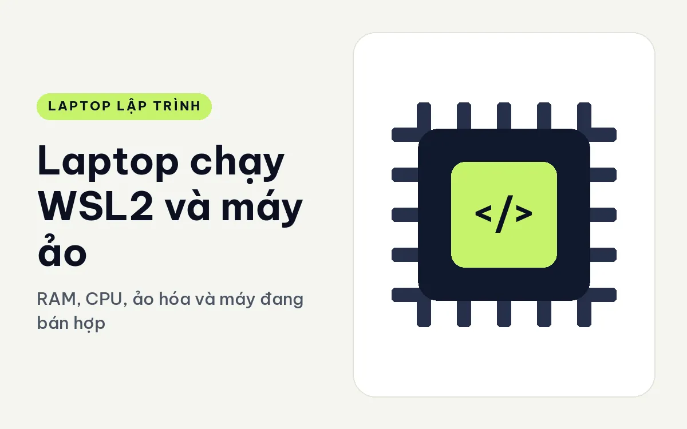
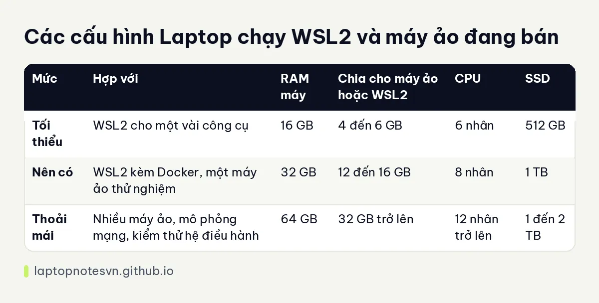

Laptop chạy WSL2 và máy ảo - RAM, CPU, ảo hóa và máy đang bán hợp

Nhiều dev chọn Windows làm máy chính nhưng viết code trong môi trường Linux qua WSL2, hoặc dựng vài máy ảo để thử hệ điều hành, thử mạng, thử bản cài sạch. Cách làm này tiện, nhưng nó chia đôi tài nguyên máy: một phần cho Windows, một phần cho các hệ khách. Cấu hình hụt thì máy chậm ở cả hai phía.
Bài này giải thích máy ảo ăn tài nguyên ra sao, cách chia hợp lý, bảng cấu hình theo mức và hai máy đang bán hợp với việc này. Mọi con số là gợi ý tham khảo từ kinh nghiệm tư vấn.
Máy ảo ăn tài nguyên như thế nào
RAM là chỗ đau nhất. Máy ảo giữ riêng một phần RAM cho nó, ngay cả khi bạn không làm gì trong đó. WSL2 nhẹ hơn máy ảo đầy đủ vì chia sẻ nhân Linux, nhưng nó cũng đòi một phần RAM đáng kể và mặc định có thể lấy tới một nửa RAM máy nếu bạn không đặt giới hạn.
CPU là chỗ thứ hai. Mỗi máy ảo được cấp một số nhân ảo. Máy 8 nhân vật lý dễ dàng chạy một máy ảo 4 nhân cạnh Windows, nhưng hai ba máy ảo cùng lúc cần chip nhiều nhân hơn. Chip có nhân hiệu năng và nhân tiết kiệm chia việc khác nhau, nên nên theo dõi xem công việc ảo hóa rơi vào loại nhân nào.
Ổ cứng cũng bị chiếm đáng kể. Mỗi máy ảo là một file đĩa ảo dung lượng hàng chục GB, bản chụp trạng thái càng làm phình thêm. SSD nhanh giúp khởi động máy ảo gọn lẹ, ổ chậm làm bạn chờ.
Cuối cùng là các tính năng ảo hóa phần cứng. Máy phải bật được ảo hóa trong BIOS, và để dùng Hyper-V thì nên có bản Windows Pro. Tính năng này thường có sẵn trên laptop hiện đại, nhưng đôi khi bị tắt mặc định.
Bảng cấu hình và cách chia
| Mức | Hợp với | RAM máy | Chia cho máy ảo hoặc WSL2 | CPU | SSD |
|---|---|---|---|---|---|
| Tối thiểu | WSL2 cho một vài công cụ | 16 GB | 4 đến 6 GB | 6 nhân | 512 GB |
| Nên có | WSL2 kèm Docker, một máy ảo thử nghiệm | 32 GB | 12 đến 16 GB | 8 nhân | 1 TB |
| Thoải mái | Nhiều máy ảo, mô phỏng mạng, kiểm thử hệ điều hành | 64 GB | 32 GB trở lên | 12 nhân trở lên | 1 đến 2 TB |
Nếu muốn hiểu thêm ranh giới RAM theo kiểu công việc, bạn có thể đọc lập trình viên cần bao nhiêu RAM.

Những mẫu máy nên cân nhắc
Với người cần mở rộng RAM sau này, Lenovo ThinkPad T14 Gen 7 (2026) có ưu thế rõ. RAM 32GB LPDDR5x 7467 dạng LPCAMM2 và có thể nâng lên 64GB, SSD 512GB, chip Core Ultra 5 325 hoặc Core Ultra 7 355 đều 8 nhân. LPCAMM2 là module tháo thay được, khác kiểu RAM hàn cố định, nên bạn có thể mua cấu hình vừa phải rồi nâng sau khi nhu cầu tăng.
Lựa chọn nhiều RAM sẵn là DELL Pro Max 16 MC16250 - Mobile Workstation (2025). Máy nặng 2,2 kg, RAM DDR5 5600, pin 96Whr, mô tả ghi chạy được 6 đến 9 giờ tùy tải. Bản cao nhất dùng Core Ultra 7 265H, RAM 64GB, SSD 2TB, card RTX PRO 2000 8GB, và máy có đầu đọc thẻ thông minh với TPM 2.0. Với WSL2 và nhiều máy ảo thì 64GB là dư địa lớn, đổi lại bạn phải chấp nhận máy nặng và to hơn dòng 14 inch.
Khi nào nên dùng WSL2, khi nào dùng máy ảo
WSL2 phù hợp khi bạn chỉ cần môi trường Linux để chạy công cụ dòng lệnh, trình biên dịch, Docker hoặc dịch vụ phát triển. Nó khởi động nhanh, dùng chung thư mục với Windows khi cần, và tiết kiệm RAM hơn máy ảo đầy đủ.
Máy ảo đầy đủ đáng dùng khi bạn cần giao diện đồ họa của hệ điều hành khác, cần cách ly mạnh, hoặc cần thử cài đặt hệ điều hành từ đầu. Bù lại, mỗi máy ảo ăn RAM và ổ đĩa riêng, nên chỉ bật khi thực sự cần.
Dân kiểm thử thường chạy vài máy ảo cùng lúc để thử phần mềm trên nhiều bản Windows hoặc Linux, và dân bảo mật dựng cả mạng ảo. Với nhóm đó RAM lớn không phải là xa xỉ mà là điều kiện làm việc. Nên tính sao cho phần dành cho Windows chủ vẫn còn tối thiểu 8 đến 12GB, tránh để máy chính bị nghẹt.
Vài lưu ý khi cài môi trường
- Tạo file giới hạn cho WSL2, đặt rõ bộ nhớ và số nhân, đừng để nó tự lấy theo mặc định.
- Để mã nguồn trong hệ file Linux của WSL2 thay vì ổ Windows, tốc độ đọc ghi file nhỏ khác biệt đáng kể.
- Chỉ dùng một trình ảo hóa chính nếu có thể. Chạy Hyper-V cùng nhiều phần mềm ảo hóa khác dễ gây xung đột.
- Xóa bản chụp trạng thái cũ của máy ảo, vì chúng âm thầm chiếm nhiều GB.
- Bật ảo hóa trong BIOS nếu máy không nhận, và nhớ cập nhật BIOS để sửa các lỗi liên quan.
Với dân hạ tầng hay chạy Kubernetes cục bộ trên các máy ảo này, bài laptop cho DevOps và cloud có thêm phần chia tài nguyên cho container.
Đăng ngày 09/11/2026